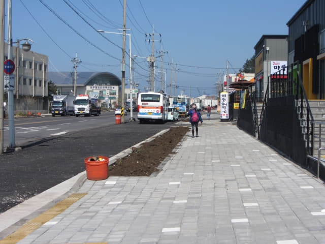

離開濟州城址, 在 NH 銀行兌換完韓元, 接著穿過東門自由市場, 沿環境優美的山地川畔一直走, 在山地川濟州港出口處轉左走一會, 濟州港旅客碼頭就在前面不遠處的馬路對面。

馬路沒有斑馬線, 很驚險地橫過汽車飛馳的馬路, 接著沿濟州港繼續向前走。
終於又來到濟州港旅客碼頭。
原來沒有預先購買船票! 唉! 又白走一趟!
進入一樓大堂, 走到購票處, 告訴售票員我們想購買明天下午13:40往木浦 (Mokpo)的船票。
「這裡沒有預先購買船票, 都是即日購買的, 在每班輪船起航前兩小時前才開始售票!」售票員告訴我們。
什麼? 沒有預先購買船票! 那麼, 如果很多乘客怎麼辦? 看來唯一辦法是明天早些來排隊吧! 唉! 又白走一趟!
濟州港旅客碼頭
既然來到, 便在濟州港旅客碼頭一樓大堂內四處參觀。接著乘手扶電梯往二樓, 這裡有很多介紹濟州歷史的照片, 因為訂不到船票, 心情不佳, 隨便逛逛便算了!
濟州港旅客碼頭二樓外的平台, 可眺望碼頭停泊的輪船。
濟州港旅客碼頭大堂面積不大, 不一會便參觀完畢, 接著返回一樓, 在大樓外的公園廣場閒逛和拍照。